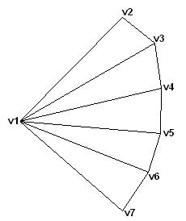

A triangle fan is similar to a triangle strip, except that all the triangles share one vertex, as shown in the following illustration.

The system uses vertices v2, v3, and v1 to draw the first triangle, v3, v4, and v1 to draw the second triangle, v4, v5, and v1 to draw the third triangle, and so on. When flat shading is enabled, the system shades the triangle with the color from its first vertex. This illustration depicts a rendered triangle fan.